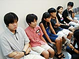
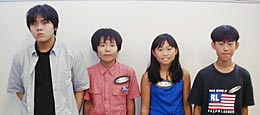
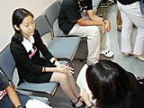
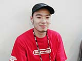

| #7 ポケモンスタジアム金銀クリスタル（仮称）エキシビジョンマッチ |
|  エキシビジョンマッチも今日が最終日。今回は特別に、出場者の楽屋におじゃましてみました。今回の出場者は全員、地区大会で優秀な成績を残した人たちです。みなさん午後のバトルをひかえ、ちょっと緊張気味？ でも、みんなそれぞれ楽しくバトルしているみたいですね。ひとりひとりに感想を聞いてみました。 まず、折舘猛くん。「新しいポケスタはグラフィックがすごいですね」と感心。今日は ちょっと緊張していたかな？ 次に須永多可志くん。「絵がきれいでプレーして楽しい。午後のバトルもがんばりたいです」。次回のポケモンリーグにもぜひ参加してみたいそうです。 紅一点の池上華子さんは「同じバトルでも絵がきれいになっているので、楽しめました」と言っていました。 小川裕幾くんは「今回は『技』と『どうぐ』のコンボを自分で見つけないと勝てないでしょうね」と新しいポケスタを冷静に分析。小川くん自身も、コンボについては「まだまだ研究中」ということでした。 |
|  左から、折館猛くん、須永多可志くん、池上華子さん、小川裕幾くん。 |
|  楽屋には前日のバトルでみごと優勝した藤田美蘭さんも来ていました。藤田さんに感想を聞いてみました。「昨日のバトルでは、コンボを考えてやりました。新しいポケスタは絵がきれいなのと、技が増えたのが特徴だと思います」。また、『ポケットモンスタークリスタル（仮称）』については、「通信対戦ができるのがうれしいです。全国には強い人が絶対いると思うので、そういう人と対戦してみたい」。さすが藤田さん、意欲満々です。 |
|  最後に、ゲスト解説者のトランセル種市さんにお話を聞きました。「新しいポケスタは『どうぐ』と『技』の組み合わせかたがポイントです。そういう意味で『金・銀』の奥深さがよく反映されていますよね。今回のエキシビジョンでもトレーナーごとに違うコンボが出てきていました。お手本になるいい試合だったといえます。次のポケモンリーグは11月からはじまりますが、あまり勝ち負けにこだわらずに自分だけの技の組み合わせを見せてほしいですね」。 |
| さて、このあと今回のイベントで最後になるエキシビジョンマッチが行われました。最終バトルを制したのは小川裕幾くん。ファイナルにふさわしい素晴らしい戦いぶりで勝利を手にしました。 |
|
|